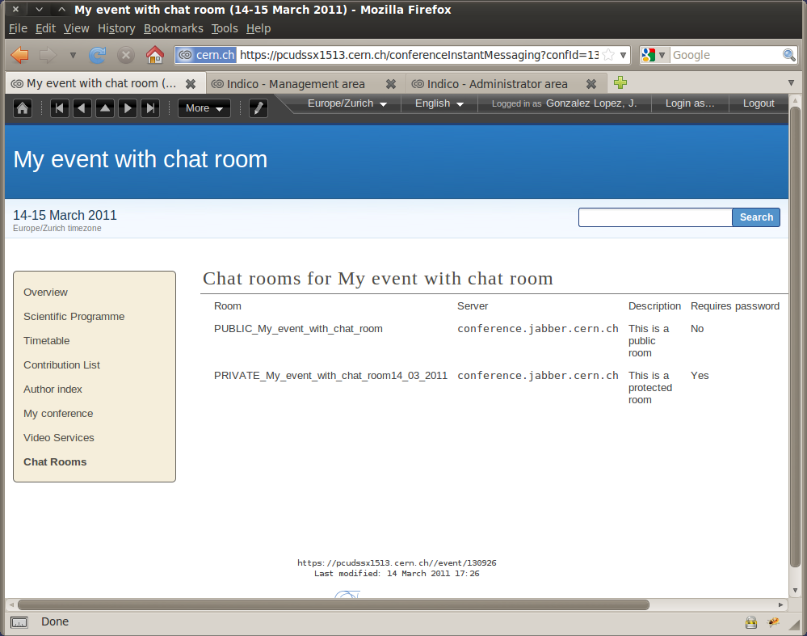

1. Chat room service¶
1.1. What is XMPP/Jabber?¶
XMPP (formerly known as Jabber) is an instant messaging system that allows users to communicate with one another. XMPP also supports creating and joining chat rooms for group communication.
1.2. Recommended clients¶
We recommend using our installation of the web client Jappix: http://jabber.cern.ch. On the other hand, if you prefer to use your own local client, we recommend:
- Pidgin for Linux/Windows
- Adium for Mac OS
However, there are many other options, so feel free to check some other clients to choose the one you prefer.
See more in the chapter about XMPP Clients.
2. How to create a chat room from Indico¶
In the management area for your event, you will find a new option, on the left menu, with the name Chat rooms. Click on it to access the chat room list.

Click the button create in order to create or add a new chat room that will be attached to your event. A popup will ask you to fill some basic information:
- Server used: you can choose default (recommended) or you can set your onw server name, in case you want to add a room from a different xmpp server.
- Chat room name: name given to your chat room.
- Description: short description for your room.
As well you will see an advanced tab with:
- Password: use it if you want to protect your chat room, therefore just the users with the password will be able to access the room.
- Information displayed in the event page: you can choose to show or hide the chat room information and the password in the home page of the event.

After the creation, the room will be listed and you can perform different actions, like:
 editing a room,
editing a room, removing a room,
removing a room, synchronizing a room with the information in the server,
synchronizing a room with the information in the server,- joining the room using the link Join now!,
- and also you can see all the details of the room by clicking
 .
.

3. How to join a chat room from Indico¶
The home page of your event will display a hyperlink to the chat rooms that you have previously created. The display is a bit different for lectures/meetings and conferences.
Here how it looks like for meetings, notice the section Chat rooms:

And here how it looks for a conference, notice that there is new item in the menu, Chat rooms:
